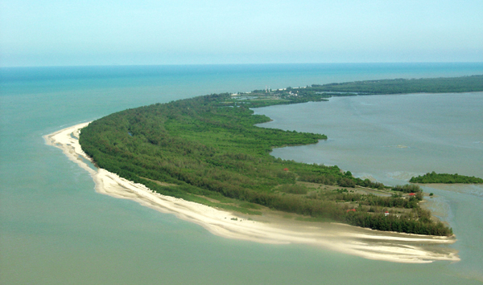
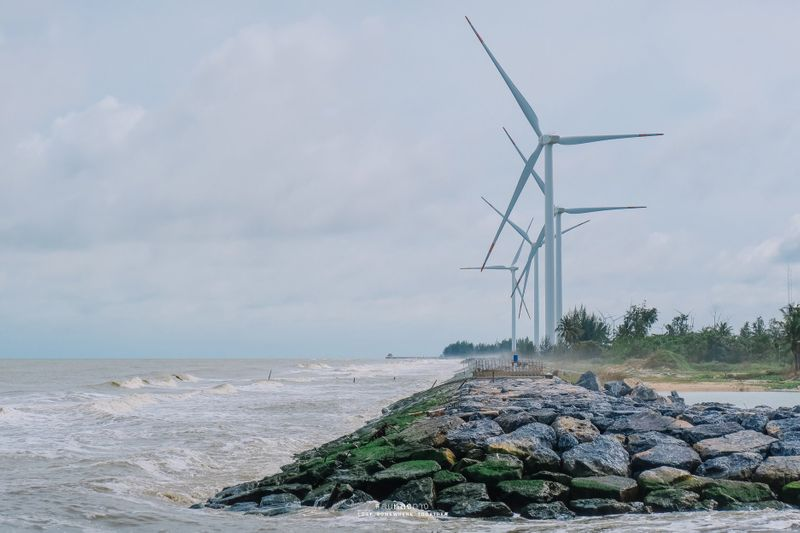

จุดเช็คอิน
1แหลมตะลุมพุก.

รูปภาพจาก : thailandtourismdirectory.
.....แหลมตะลุมพุก สถานที่ท่องเที่ยวนครศรีธรรมราชในอำเภอปากพนัง จุดเด่นคือเป็นชายหาดสีขาว รูปพระจันทร์เสี้ยว ยาวโค้งเรียวยาวไปตามชายฝั่ง ทะเลแนวเหนือ-ใต้ ระยะทางประมาณ 6 กิโลเมตร ด้านหนึ่งของแหลมรับลมทะเล จากฝั่งอ่าวไทย อีกด้านรับคลื่นลมในฝั่งอ่าวปากแม่น้ำปากพนัง นักท่องเที่ยวสามารถเดินทางด้วยรถยนต์จนถึงปลายแหลมได้ซึ่งมีจุดชมวิว360 ํ เป็นแหล่งท่องเที่ยวพักผ่อนหย่อนใจ ซึ่งในปัจจุบันมีการปรับทัศนียภาพให้สวยงามขึ้น ที่นี่เป็นแหล่งรวบรวมวิถีชีวิตที่หลากหลาย ทั้งชาวอิสลาม ชาวจีน และชาวพื้นเมือง แม้ในอดีตแหลมตะลุมพุกจะได้รับความเสียหายอย่างร้ายแรงจากพายุโซนร้อนแฮเรียตในปี 2505 แต่ภาพความสวยงามของชายหาด ก็ทำให้แหลมตะลุมพุกแห่งนี้กลับมาสดใสและมีชีวิตชีวาอีกครั้ง ที่ตั้ง ตำบลแหลมตะลุมพุก อำเภอ ปากพนัง นครศรีธรรมราช วันเวลาเปิด-ปิด ทุกวัน 08.00- 17.00 น.
GOOGLE MAP : https://maps.app.goo.gl/xBUwi99vHvwDGKrC6
2.พระตำหนักประทับแรม
พระตำหนักประทับแรมปากพนัง ถูกสร้างขึ้นในโครงการสร้างบ้านให้พ่อซึ่งดำเนินการโดยความร่วมมือของชาวจังหวัดนครศรีธรรมราชและชาวไทย ทั่วประเทศ โดยมีวัตถุประสงค์เพื่อให้เป็นพระตำหนักทรงงานถวายแด่พระบาทสมเด็จพระเจ้าอยู่หัวในคราวเสด็จอยู่ และทรงงานในจังหวัดนครศรีธรรมราช ภายในพระตำหนักประกอบไปด้วยกลุ่มอาคารพระตำหนักฯ มีลักษณะสถาปัตยกรรมภาคใต้ ตั้งอยู่ในพื้นที่โครงการพัฒนาพื้นที่ลุ่มน้ำปากพนังอันเนื่องมาจากพระราชดำริ ในอดีต อำเภอปากพนัง จังหวัดนครศรีธรรมราชและในเขตพื้นที่ลุ่มน้ำปากพนัง “พรุควนเคร็ง” ประสบกับปัญหาเดือดร้อนจากความเสื่อมโทรมของทรัพยากรและสิ่งแวดล้อมอย่างหนัก ทั้งอุทกภัยการขาดแคลนน้ำจืด ปัญหาดินเปรี้ยว ปัญหาน้ำเค็มรุกล้ำพื้นที่เกษตร ผลผลิตตกต่ำ ซึ่งก่อให้เกิดความทุกข์ยากแร้นแค้น ส่งผลถึงการอพยพแรงงานและการโยกย้ายถิ่นฐาน จากดินแดนซึ่งเคยเป็น “อู่ข้าวอู่น้ำ” มีความอุดมสมบูรณ์ทั้งพื้นที่นาและในแม่น้ำ กลับกลายเป็นพื้นที่ที่มีความยากจนมากที่สุดของประเท ซึ่งตั้งอยู่ที่ ตำบลหูล่อง อำเภอปากพนัง จังหวัดนครศรีธรรมราช เป็นพระตำหนักแห่งแรกและแห่งเดียวของประเทศ ที่ก่อสร้างขึ้นจากความร่วมแรงร่วมใจของประชาชนชาวไทย เพื่อทูลเกล้าฯ ถวายแด่พระบาทสมเด็จพระเจ้าอยู่หัวด้วยความจงรักภักดีและสำนึกในพระมหากรุณาธิคุณอันล้นพ้นที่พระองค์ท่าน ทรงเมตตาต่อเหล่าพสกนิกรชาวปากพนังเป็นที่ยิ่ง
GOOGLE MAP : https://maps.app.goo.gl/HbyHfyDMic9uiuVH6
3. Pak Phanang wind Park
รูปภาพจาก : blockdit
.....โครงการสวนกังหันลมเลียบชายฝั่ง โดยบริษัท อินเตอร์ ฟาร์อีสท์ วินด์ อินเตอร์เนชั่นแนล จำกัด (IWIND) ซึ่งเป็นบริษัทลูกของ บริษัท อินเตอร์ ฟาร์อีสท์ เอ็นเนอร์ยี่ คอร์ปอเรชั่น จำกัด (มหาชน) หรือ IFEC เคยได้รับรางวัลดีเด่น ASEAN Energy Awards 2017 ด้านพลังงานทดแทน ประเภทโครงการที่เชื่อมโยงกับระบบสายส่งไฟฟ้า (On-Grid) กังหันลมแห่งนี้ได้ขึ้นชื่อว่าเป็น “กังหันลมกึ่งหุ่นยนต์รุ่นไร้เกียร์” เพราะสามารถหมุนหาลมได้เอง 360 องศา และหมุนปรับองศาใบพัดได้เองอัตโนมัติ เพราะใช้ระบบเซ็นเซอร์ควบคุม และป้องกันเหตุฉุกเฉินต่างๆ ระหว่างการผลิต กระแสไฟฟ้าด้วยการแจ้งข้อมูลตลอด ๒๔ ชั่วโมง นอกจากจะผลิตไฟฟ้าจากพลังงานลมแล้ว ยังเป็นแหล่งท่องเที่ยวและเป็นศูนย์เตือนภัยพิบัติชายฝั่งให้ชุมชนรอบบริเวณด้วย
GOOGLE MAP : https://maps.app.goo.gl/FHzufZ9hyAQeBGqq6